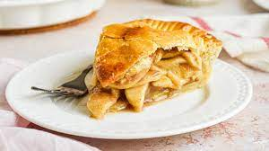

Apple Pie

Description
A classic Bramley apple pie with homemade shortcrust pastry.
Its fruit in a pie so its healthy right? Right?
Ingredients for the filling:
- 1kg Bramley apples
- 140g golden caster sugar
- 1/2 tsp cinnamon
- 3 tbsp flour
Ingredients for the pastry:
- 225g butter
- 50g golden caster sugar
- 2 eggs
- 350g plain flour
- Whipped cream
Method:
- Quarter, core, peel and slice apples approximately 5mm thick and lay on baking sheet.
- Beat butter and sugar in a large bowl until just mixed. Break in a whole egg and 1 yolk (keep white of 1 egg aside), beat together for 1 minute.
- Work in the flour until it starts to clump up and then gather together with your hands.
- Work dough into a ball, wrap in cling film and chill for 45 minutes.
- Mix sugar, cinnamon and flour for the filling into a bowl leaving enough space for the apples.
- Heat oven to 190C fan.
- Lightly beat egg white with fork.
- Cut off a third of the pastry whilst you roll the rest, use the third to line the pie tin. Roll remaining third to a circle with 28cm diameter.
- Tip apples into bowl with cinnamon-sugar mix and briefly mix, then tip into pie tin.
- Lay pastry lid over the tin and press edges together to seal. Cut slashes for steam to escape.
- Brush with egg white and bake for 45 minutes until golden brown, then sit for 10 minutes.